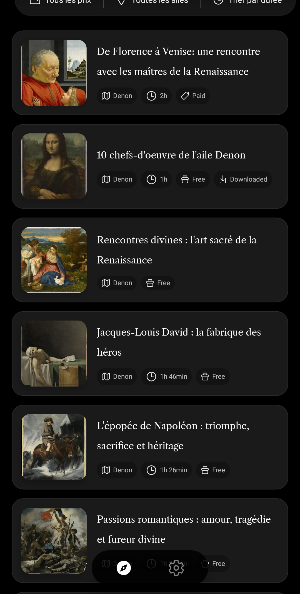
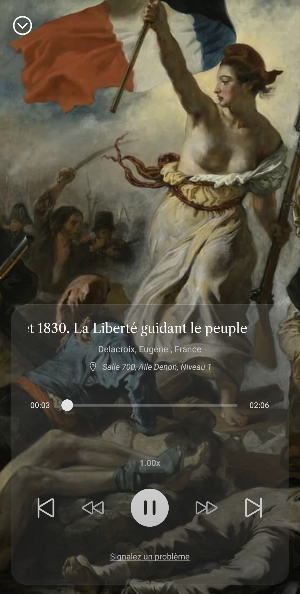
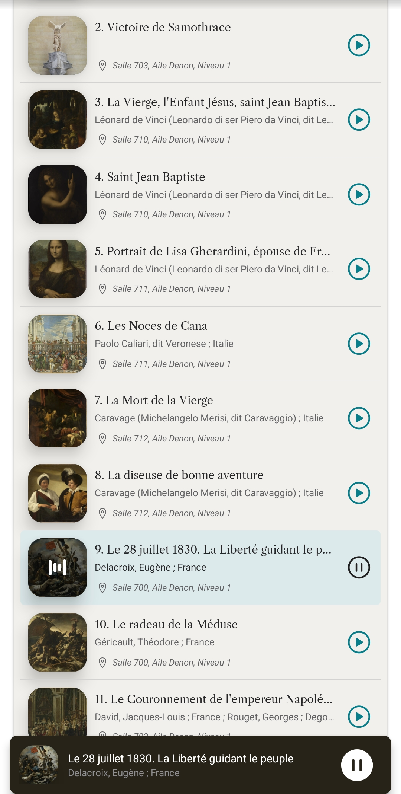
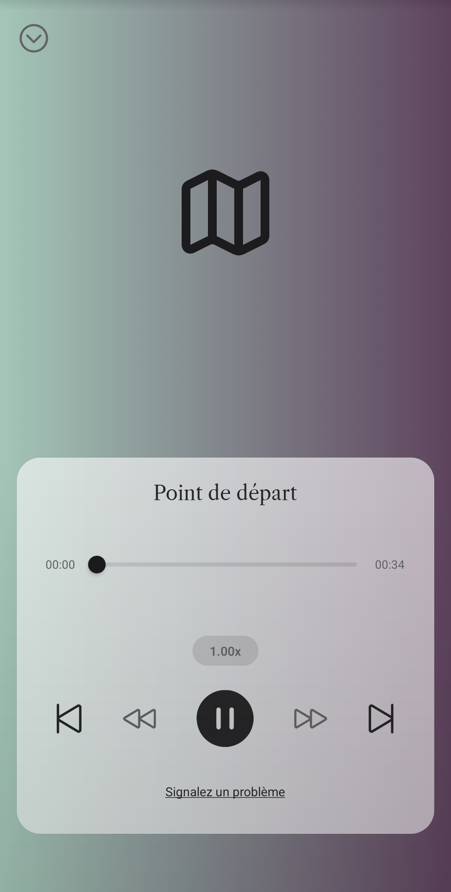
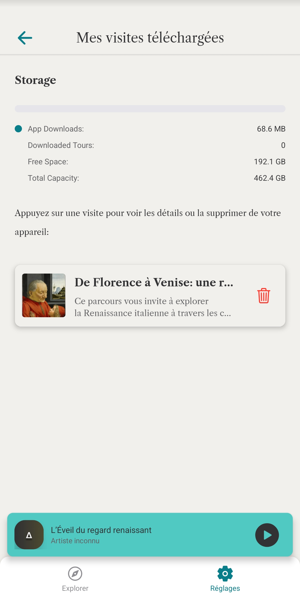

Audioguide du Louvre sur Android
Le Louvre est immense. Odyssée propose une visite audio construite comme un récit : les œuvres dialoguent entre elles pour donner du sens à l’ensemble du parcours.
Pourquoi la visite du Louvre
peut être un défi
Trop de salles et d'œuvres pour une seule visite
Même avec plusieurs heures sur place, il est impossible de tout voir sans un fil conducteur narratif.
Un manque de clés pour comprendre ce que l'on regarde
Les œuvres sont extraordinaires, mais sans récit, leur sens peut rapidement s'estomper face à la profusion.
La tentation de tout voir, au risque de s'épuiser
On ressort souvent du musée impressionné mais épuisé, avec une sensation de survol plutôt qu'une rencontre.
Comment fonctionne Odyssée
Odyssée a été conçu pour s’adapter aux conditions réelles de visite du Louvre.
Choisir un point de départ
Une œuvre emblématique, une civilisation, ou un parcours pensé pour une partie du musée.
Écouter des récits
Des histoires conçues pour être écoutées dans le musée, sans interrompre la visite.
Suivre les liens
Chaque séquence vous conduit naturellement vers d’autres œuvres, proches dans l’espace ou dans l’histoire.
Fonctionne sans réseau
Les contenus sont disponibles hors ligne pour écouter librement même sans connexion dans les salles.
Une immersion inédite au cœur du Louvre
L’expérience de visite, résumée en 6 étapes clés.






Une collection
de récits qui grandit
Odyssée propose désormais plus de 9 parcours au Louvre. Des civilisations anciennes aux maîtres de la Renaissance, notre collection s'enrichit régulièrement pour offrir de nouveaux regards sur le monde.
Accès illimité pour nos premiers membres
Pour célébrer le lancement, l'intégralité de nos parcours est gratuite pour les premiers utilisateurs. Créez un compte aujourd'hui : vos parcours resteront gratuits à vie, même après le passage à la version premium.
Créer mon compte gratuitQuestions fréquentes
Est-ce le site officiel du Louvre ?
Non. Odyssée est une application indépendante, conçue pour accompagner la visite du Louvre à travers des parcours audio narratifs. Elle n’est ni affiliée ni administrée par le musée du Louvre.
Est-ce que ça remplace l’audioguide officiel ?
Non. Odyssée propose une approche complémentaire, centrée sur le récit et la mise en relation des œuvres. Le site et l’audioguide officiels fournissent des informations institutionnelles et documentaires.
Est-ce que ça fonctionne hors ligne au musée ?
Oui. Une fois les parcours téléchargés, l’écoute fonctionne entièrement hors connexion, vous permettant de suivre la visite sans dépendre du réseau.
Y a-t-il du contenu gratuit ?
Oui. Actuellement, tous nos parcours sont gratuits pour nos premiers utilisateurs. En créant un compte dès maintenant, vous bénéficiez d'un accès gratuit à vie à tous les parcours existants, même lors du passage au modèle premium.
Commencer la visite
Installez Odyssée et explorez le Louvre à travers des récits conçus pour le musée.
Installer sur Google Play